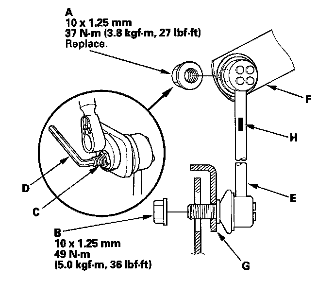

Rear Suspension
Stabilizer Link Removal/Installation1. Raise the rear of the vehicle, and support it with safety stands in the proper locations.
2. Remove the center cap and the rear wheel.
3. Remove the self-locking nut (A) and the flange nut (B) while holding the respective joint pin (C) with a hex wrench (D) then remove the stabilizer link (E).

4. Install the stabilizer link on the stabilizer bar (F) and lower arm (G) with the joint pins set at the center of their range of movement.
NOTE: The left stabilizer link has a yellow paint mark (H) while the right stabilizer link has a white mark. Align the paint mark to the outside.
5. Install a new self-locking nut and a new flange nut, and lightly tighten them.
6. Clean the mating surface of the brake disc/drum and the inside of the wheel, then install the rear wheel.
7. Tighten the self-locking nut and flange nut to the specified torque values while holding the respective joint pin with a hex wrench.
8. Test-drive the vehicle.
9. After 5 minutes of driving, tighten the self-locking nut again to the specified torque value.